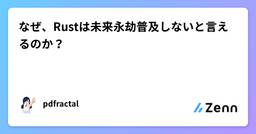

直近1週間の人気フィード
はてなブックマーク数を元に新着優先で並べ替え

Obsidian公式の「エージェント向け」スキル集が登場 Vault操作法とファイル形式をひとまとめに 53ITmedia AI＋ 最新記事一覧
53ITmedia AI＋ 最新記事一覧
マークダウンエディタ「Obsidian」に「エージェント向けの公式コネクタ」機能が登場した。
2日前

飲食店の“AI商品画像”は景品表示法違反にならないの？ 弁護士の見解 40ITmedia AI＋ 最新記事一覧
飲食店のメニューにAIで生成した画像を使用した場合を例に、生成AIによる商品画像と景品表示法の関係について考える。
2日前

脆弱性の発見数、1年で2倍超 Microsoft製品も月100件から1000件超に……AIで一変 36ITmedia AI＋ 最新記事一覧
米Microsoftが毎月公開しているWindowsのセキュリティ更新プログラム。11月は1000件以上の脆弱性が修正された。他社の製品も含めると、2026年に入って発見された脆弱性は10万件を超え、すでに25年の倍以上だ。AIの進化に伴い脆弱性の発見とそれを悪用した攻撃が激増する中で、パッチを適用する側はどう対処すればいいのか。
3日前

GitHubに「人には見えない隠し文字」 小型AIの操作狙うものも……1億4500万件を調査 25ITmedia AI＋ 最新記事一覧
イスラエルのセキュリティ会社Radwareとテクニオン・イスラエル工科大学に所属する研究者らが発表した論文「Who Is Prompt-Injecting Coding Agents? An Empirical Study of Hidden AI-Directed Text on GitHub」は、GitHub上に潜むAI向けの隠しテキストが、誰によってどのような目的で埋め込まれているのかを分析した研究報告だ。
3日前

Character.AIのチャット履歴競売に41州とワシントンD.C.が異議 未成年者の約210万アカウント分も対象 20ITmedia AI＋ 最新記事一覧
米カリフォルニアやコネチカットなど41州とワシントンD.C.の司法長官は、破産申請した「Character.AI」の資産競売に異議を申し立てた。競売には未成年者の210万以上を含む2100万超のチャット履歴が含まれるが、買い手にデータ保護の義務がなく、プライバシー法に反するとして売却の却下を求めている。
3日前

旅行会社に残る価値は？ 生成AIに「旅の相談」が当たり前の今、業界の生存戦略 18ITmedia AI＋ 最新記事一覧
検索から予約、決済まで自律的にこなす「AIエージェント」の普及で、旅行会社の存在意義が問われている。日本旅行業協会（JATA）主催のシンポジウムに旅行・食・IT・大手旅行会社のプロ4人が登壇。「おいしい」を味わう感覚や、顧客の言葉の裏にある本音までは読み取れないAIの限界を指摘し、AIによる業務効率化で生み出した時間を「信頼関係」や現場の感動体験に振り向ける共創の生存戦略を議論した。
3日前

AnthropicのアモデイCEO、「人間の自由意志をAIに明け渡す」考えを否定 AI企業間で議論 15
ITmedia AI＋ 最新記事一覧
Anthropicのダリオ・アモデイCEOは、超知能AIに人間の意思決定権を委ねるべきだと考えているとしたAxiosの報道をXで否定した。社会の統治と個別タスクの自動化を混同していると反論し、AIは民主的プロセスで管理されるべきだと強調した。超知能時代の主導権を巡っては、OpenAIやMeta幹部も発言しており議論が広がっている。
3日前

なぜ、Rustは未来永劫普及しないと言えるのか？ 3 Zennの「生成 AI」のフィード
Zennの「生成 AI」のフィード
筆者は2026年3月5日に、以下の記事を公開しました。 この記事では、従来は人間にとって負担であったRustの厳格な型システムや所有権システムが、AIにとっては実装の正しさを検証するための有効な仕組みとして機能することに着目しました。AIによってRustの実装難易度という弱点が緩和され、安全性という長所が残ることで、基幹領域での採用が連鎖し、Rustが覇権言語になる可能性を論じたものです。当時の筆者は、組み込みソフトウェアからWebアプリケーションまでRustで統一される未来にも期待していました。 現在でも、この技術的なメカニズム自体は成立すると考えています。しかし、考察を進めると、むし...
1日前

家計データをなぜ「Muse」「ChatGPT」に渡すのか？ マネーフォワードに聞いた狙いと安全策 3ITmedia AI＋ 最新記事一覧
頼んでもいないのに、AIが朝一番にカードの引き落としと預金を照らし合わせて知らせてくる。家計簿アプリ「マネーフォワード ME」のデータがMetaのMuseに届くようになったからだ。だが家計の記録は、マネーフォワードにとって最大の資産のはず。なぜ外のAIに差し出したのか。安全は誰が守るのか。
2日前